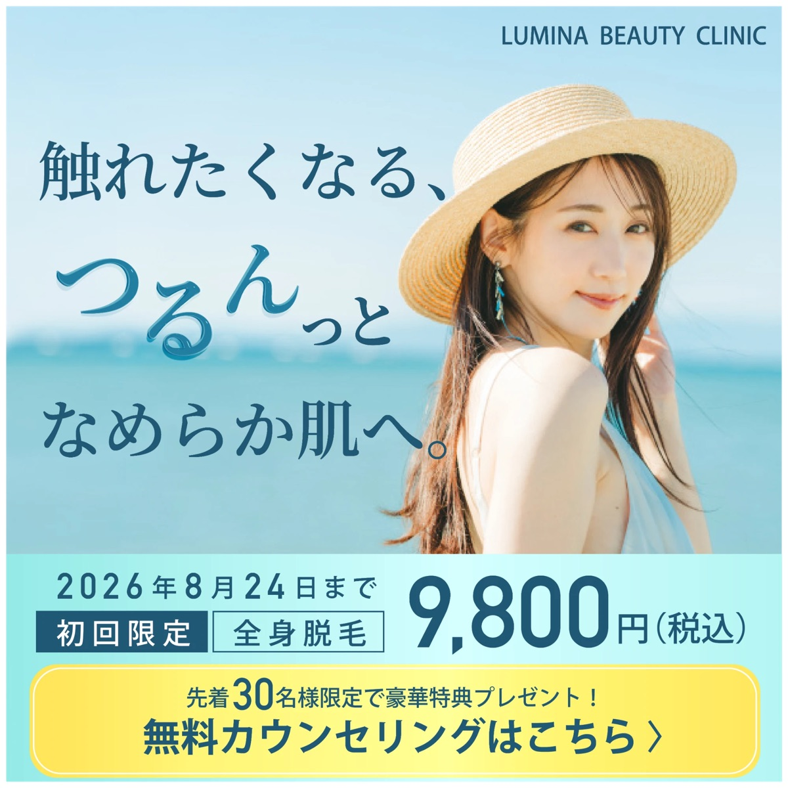

美容クリニック キャンペーンバナー
- 制作区分
- 自主制作
- 制作概要
- 美容クリニックの全身脱毛キャンペーンを想定した広告バナー。
- 制作目的
- 初回限定価格を訴求し、無料カウンセリングの申し込みにつなげること。
- ターゲット
- 20〜30代の女性。美容への関心が高く、医療脱毛を検討している方。
- デザインの意図
夏らしい爽やかなブルーを基調に、清潔感と透明感を演出しました。
キャッチコピーでは文字の大きさや書体に変化をつけ、柔らかく女性らしい印象に仕上げています。
また、キャンペーン価格を大きく配置し、CTAボタンには目を引くイエローを採用することで、視認性とクリックへの誘導を意識しました。
- 使用ツール
- Adobe Illustrator / Adobe Photoshop